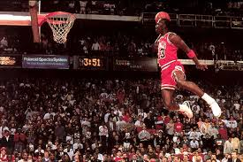

El baloncesto, basquetbol o básquetbol (castellanización de basketball, en inglés) es un deporte en
equipo, en el que dos bandos de jugadores se enfrentan y tienen como objetivo hacer entrar un balón en
el aro del equipo contrario. Gana el juego el equipo que más anotaciones o “canastas” haga.
El básquetbol es uno de los deportes más practicados en la actualidad por equipos de hombres y mujeres, tanto de forma profesional como amateur. La liga más reconocida de básquetbol es la NBA, una liga privada estadounidense en la que juegan equipos como Los Angeles Lakers y los Chicago Bulls. Además, existen otras variantes de este deporte, como baloncesto en silla de ruedas, el streetball y el baloncesto 3×3. La Federación Internacional de Baloncesto (FIBA) es el ente regulador de la práctica de este deporte en el mundo entero y la encargada de organizar competiciones oficiales. El básquetbol es deporte olímpico desde 1936.
 Los fundamentos del basquetbol son las siguientes:
-
a) El bote o drible Todo el tiempo que un jugador tenga el balón deberá botarlo contra el suelo.
Este movimiento se realiza con una sola mano y de manera controlada, para que el jugador pueda, al mismo
tiempo, caminar o correr. El bote no puede hacerse con ambas manos, ni puede el jugador avanzar sin
hacerlo. Cuando el jugador se detiene deberá obligatoriamente hacer un pase o tendrá dos pasos para
intentar un tiro al aro.
b) Los pases Se llama pase a la acción de entregar el balón a un compañero, de modo efectivo y preciso, a través de una variedad de movimientos. Los contrincantes pueden intentar interrumpir un pase y adueñarse del balón. Los principales pases en básquetbol son: el pase de pecho, el pase de espalda, el pase picado (botando una vez contra el suelo), el pase por encima de la cabeza y el alley-oop (tirar cerca de la canasta para que un compañero la emboque).
c) Los tirosUn tiro consiste en arrojar el balón al aro, lo que supone una anotación. Los tiros pueden ser: Tiro en suspensión. Consiste en lanzar el balón a la canasta tras elevarse en el aire. Tiro en estático. Consiste en lanzar el balón hacia el aro estando de pie. Tiro libre. Consiste en tirar el balón desde la línea de tiro libre luego de una falta y sin saltar. Tiro de bandeja. Consiste en lanzar el balón al aro en carrera, dando como máximo dos pasos sin botar la pelota contra el suelo. Tiro de mate. Consiste en dar un salto y meter el balón en el aro tocando o colgándose del aro. Tiro de gancho. Consiste en un tiro contra el aro, ya sea con ambas manos o con una sola haciendo con ella de gancho en el aire.
NBA La National Basketball Association (Asociación Nacional de Baloncesto) es una liga privada de baloncesto profesional estadounidense y una de las más reconocidas del mundo. Esta liga no depende de la Federación Estadounidense de Baloncesto, ya que es una liga privada, pero suele tener convenios con ella y con la FIBA (Federación Internacional de Baloncesto). La NBA fue fundada en 1946 en Nueva York por los dueños de los más importantes clubes de básquetbol estadounidenses. Actualmente, está conformada por 30 equipos o franquicias, agrupadas en dos conferencias: la este y la oeste, y en seis divisiones de cinco equipos cada una. Los equipos que más títulos ganaron en la NBA son: Boston Celtics, Los Angeles Lakers, Chicago Bulls, Golden State Warriors, San Antonio Spurs, entre otros.
HISTORIA:El baloncesto fue creado en 1891 por James Naismith, un profesor de educación física canadiense, en Springfield, Massachusetts, Estados Unidos. Naismith quería incorporar un deporte que pudiera practicarse dentro de la escuela, para evitar las bajas temperaturas del invierno, y que implicara menos contacto físico que deportes populares como el fútbol o el rugby. Colocó en el gimnasio unos cestos de fruta a una determinada altura que cumplían la función de canasta a la que se le arrojaba una pelota de fútbol . El baloncesto era jugado de a 18 jugadores y fueron establecidas trece reglas clave. El juego se extendió en escuelas y universidades de Estados Unidos y se popularizó tras la Primera Guerra Mundial gracias a los soldados estadounidenses. Fue incluido como deporte de exhibición en los Juegos Olímpicos de Ámsterdam (1928) y de Los Ángeles (1932) y establecido como deporte olímpico en los Juegos de Berlín (1936).